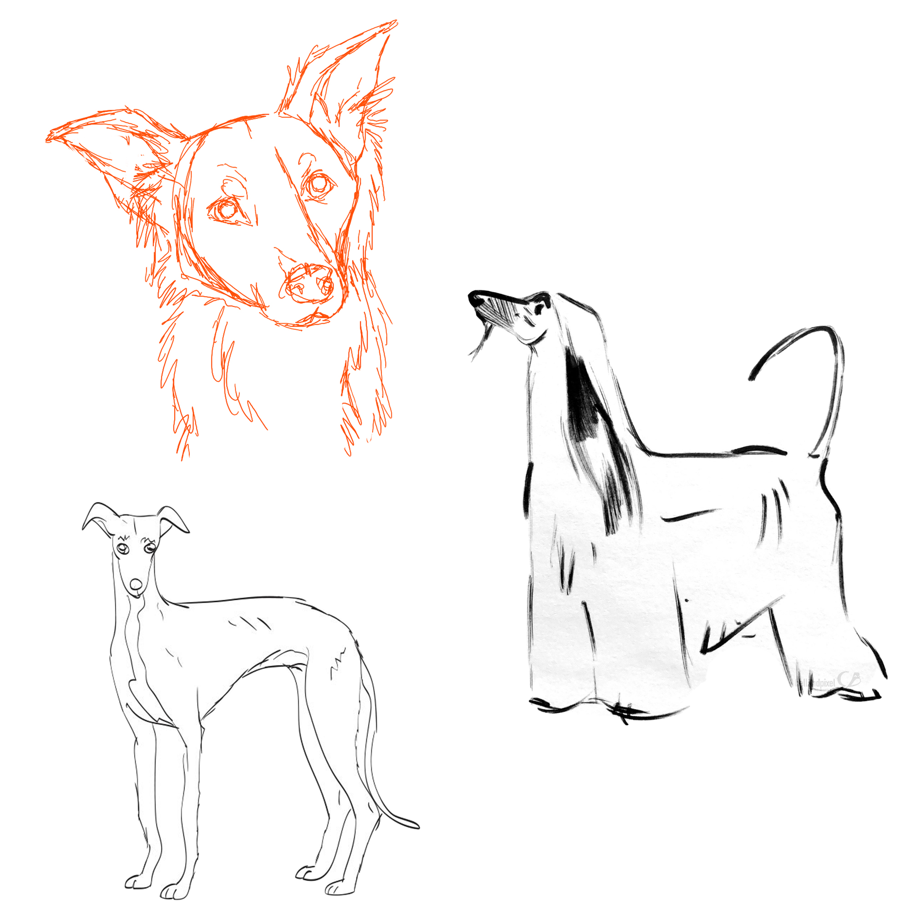

My Favorite Sighthounds
The Afghan Hound

Breed Summary:
The Afghan Hound is an ancient breed, his whole appearance one of dignity and aloofness – his eyes gazing into the distance as if in memory of ages past. An intelligent and independent mind, his whole appearance one of dignity and style. To his own he is devoted and loyal with a charming and lively personality. The Afghan Hound is an athlete capable of immense speed and requires a large fenced in yard and exercise daily. To learn more about this breed, please visit the offical American Kennel Club web page.
The Silken Windhound
Breed Summary:
The Silken Windhound is a newer breed. Very affectionate to their human companions, they take well to early socialisation training and can easily adapt to all types of lifestyle. This breed can happily live in an apartment as long as they can go for a long walk and have a run about each day. Due to their high prey drive, like other sighthounds, they need strong and secure fencing to keep them in your yard since they can often be tempted to chase small animals. The Silken Windhound may be trained for dog sports, agility and obedience, and they’ll appreciate the mental and physical challenge that such training provides. When not properly challenged, they could develop destructive behaviours through boredom. These dogs usually have the occasional high energy burst, but then they’ll happily spend the rest of their time curled up on a sofa with their beloved human family. To learn more about this breed, please visit Dogtime.com
The Italian Greyhound

Breed Summary:
IGs are Greyhounds in miniature—more slender, but a Greyhound’s equal in grace and elegance. Standing ideally 13 to 15 inches at the shoulder, they present the sleek, curving lines common to all coursing hounds. Distinguishing features are the long, fine-boned legs. IGs combine the attentiveness of lapdogs with the complexity of ancient, aristocratic hounds. Bred for centuries to be doting companions and jesters, these high-stepping charmers refuse to be ignored. They are, though, true sighthounds and will bolt after quick-moving prey at the drop of a cat. A short-coat, low-fat breed, IGs require extra care in cold weather. To learn more about this breed, please visit the official American Kennel Club web page.
Keep in mind each individual dog is different and may not fit these standards
The Afghan Hound
| Characteristic | Difficulty |
|---|---|
| Grooming | 4.8/5 |
| Trainability | 2/5 |
| Health | 3.5/5 |
| Exercise | 4/5 |
| Watch/Guard Dog | 3/5 |
| Energy Level | 3.7/5 |

Puppy Supplies List:
Inisfree Afghan Hounds is a small kennel located in Minnesota. They have owned Afghan Hounds for over 30 years and continue to show and breed responsibly. They are registered on the Board of Directors for the Afghan Hound Club of America. They complete all proper breed-specific health testings on their puppies prior to leaving the kennel and raise them as a part of the family.
Laelaps Silken windhounds is another small kennel- located in Texas. Their dogs are family raised and are first, and foremost, loved pets. Their goal is to produce versatile dogs who are sound in body and mind. As a relative new breed, Laelaps Hounds' goal is to produce physically sound athletes and emotionally resilient partners who adhere to the breed standard. Our dogs are health tested, titled and registered with ISWS and UKC.
Aurelie's Italian Greyhounds are of excellent health, conformation, and temperament. These are all inherited traits with a strong environmental influence, which is important to you when searching for the perfect puppy. They come with vet check, health certificate, written health guarantee, dewclaws removed, wormed, first three puppy shots, shot record, puppy food sample, vitamin sample, optional AKC registration papers, and a lifetime of unlimited breeder support.